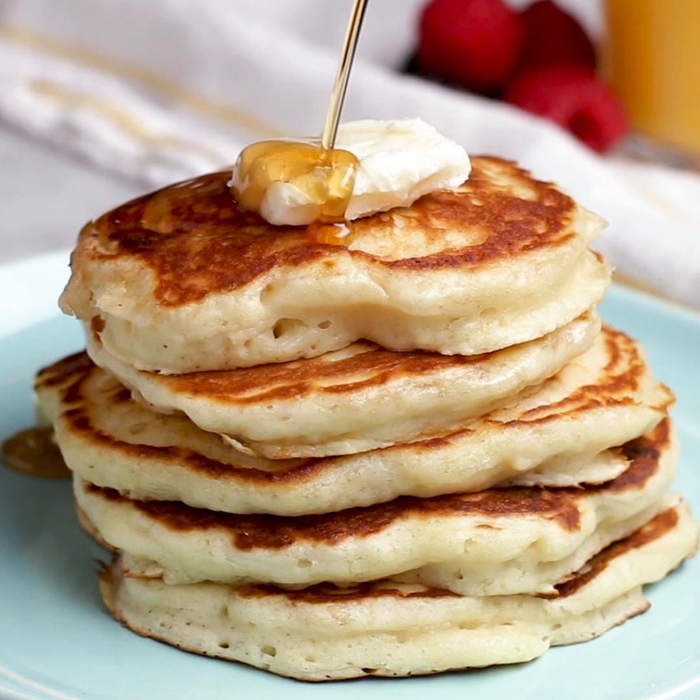

Pancakes have been one of my favorite foods since I was a kid. The fluffy texture and buttery taste accompanied by the sweetness of the maple or corn syrup simply makes these a staple in my list of cheat meals.
Places where I get my pancakes:
- Birdseed (Cebu)
- IHop
- McDonalds
Ingredients
for 4 Servings
- 2 cups all-purpose flour (250g)
- 2 tbsp sugar
- 1/2 tsp kosher salt
- 1/2 tsp baking powder
- 1/2 tsp baking powder
- 2 cups buttermilk (480 mL)
- 2 eggs
- 3 tbsp unsalted butter, melted
- 1/2 tsp unsalted butter, plus more to serve
- maple syrup, to serve
Preparation
- In a bowl, add the flour, sugar, salt, baking powder, and baking soda, and whisk to combine.
- In a bowl or measuring cup, whisk the buttermilk, eggs, and melted butter until smooth.
- Add the buttermilk mixture to the dry ingredients, gently incorporating with a spatula. Make sure not to overmix, as that will result in dense pancakes.
- Add the butter to a pan over medium low heat. Once the butter begins to bubble, add ⅓ cup (80 ml) of batter to the pan.
- Cook until the top side begins to bubble and the bottom is golden brown. Flip the pancake and cook until the underside is golden brown. Repeat with the remaining batter.
Back to Top
Return to Homepage